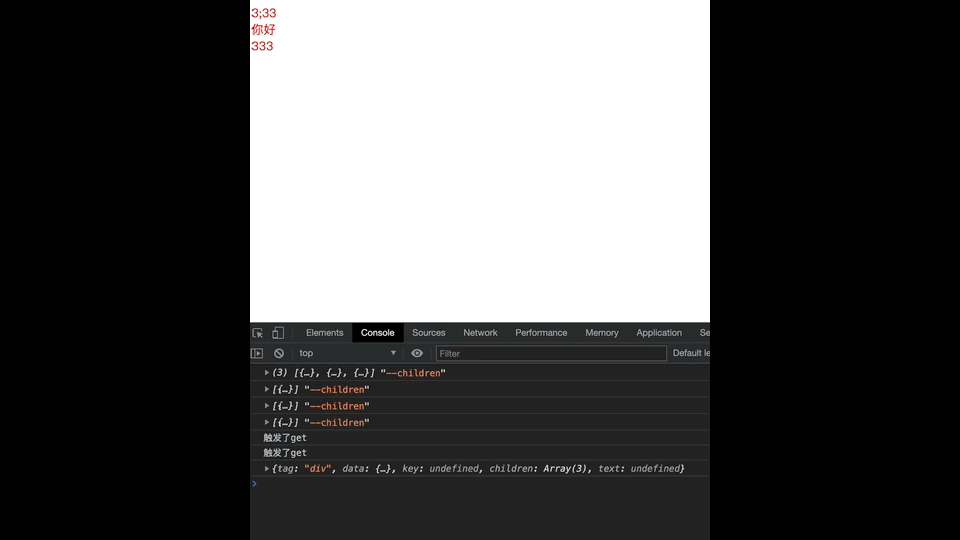
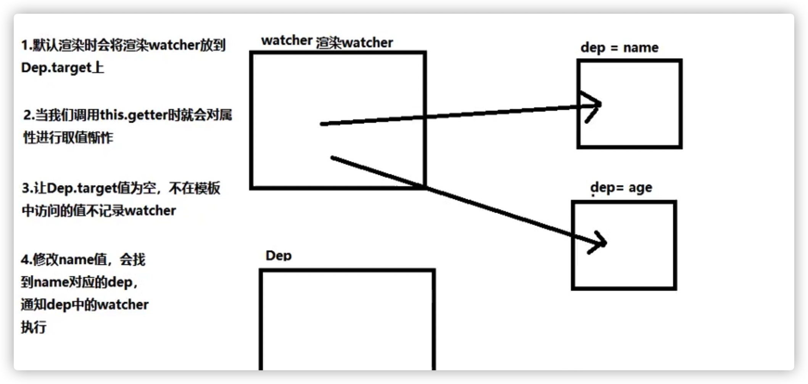

Vue源码开发-数据收集依赖05
Vue源码开发-对象的依赖收集
1 | 1. 我们前面已经初次把我们的虚拟DOM 渲染到页面上了 |
1 | export function patch(oldVnode,vnode) { |
更新流程
1 | 1. 这要知道 当我们访问 Vue实例上 data 里的数据的时候 也就是改变上data里的数据 页面会自动更新 |
1 | <body> |
1 | 1. 我们上面通过手动调用 _update 和 _render 方法 从而更新了视图 |

自动更新视图
1 | 1. 这里我们首先要注意一些问题 只有我们模版上 依赖了我们data里的数据 当data里的数据更新了 我们才去更新视图 |
1 | <body> |
依赖收集
1 | 1. 首先还是和我们的上面一样 我们的模版中 用到了 data中的数据 而data中的这个数据变化了 我们就要去更新视图 |
1 | export function mountComponent(vm,el){ |
1 | // observe / watcher.js |
1 | 1. 上面只要render函数一调用。我们就要对 Vue 实例中的data 进行了取值 |
Dep 类
1 | 1. 首先我们知道 我们 在 new Vue 之后 会开始初始化数据 |
1 | <!--这里我们知道当我们new Vue 的时候 data 里的数据 product list name 都已经没劫持过了--> |
1 | function defineReactive(data,key,value){ |
1 | 1. 接下来 我们就需要首次渲染了 首次渲染通过我们的模版 HTML字符串 会编译成我们的 AST语法树 |
1 | // 首次渲染 我们需要在 watcher类中去调用 _update 函数。和。_render函数 |
watcher 类
1 | 1. 首先这里需要知道 watcher类 里面要会有 你模版依赖 需要的 Dep 类 |
1 | // observe / watcher.js |
1 | // observe / dep.js |
1 | // observe / index.js |
总结
1 | 1. 首先我们知道 我们data里的每一个数据都已经被劫持过了 也就是在data上每一个变量的数据 都添加了get 和 set函数 当访问的时候 触发get 函数 当赋值的时候 触发set函数 |



公告
感谢访问本站，如喜欢请收藏。本站主要分享前端知识，立志成为资深前端工程师，但目前是一个前端界的小学生 若喜欢可以打赏请博主喝一杯冰阔落
另外请大家多多支持淼哥的开源项目
https://github.com/flipped-aurora/gin-vue-admin
🌟🌟欢迎大家start 🌟🌟
欢迎加入博主的前端技术交流群